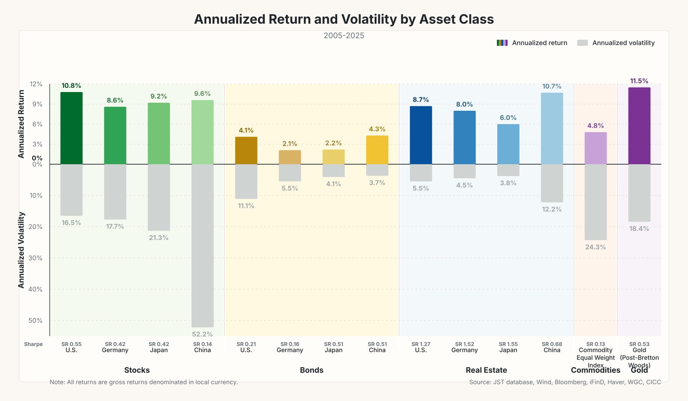
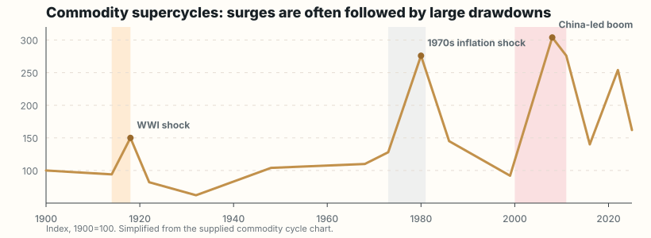
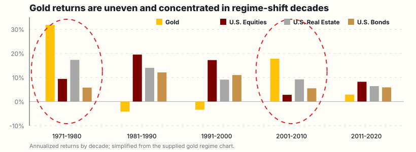
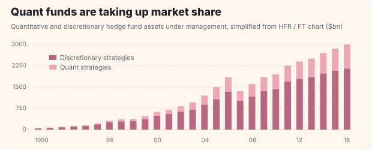
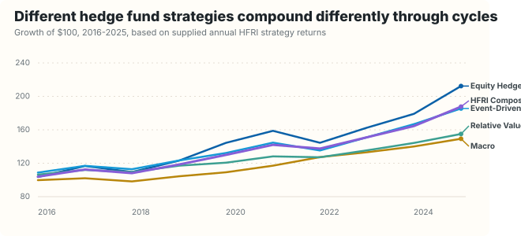
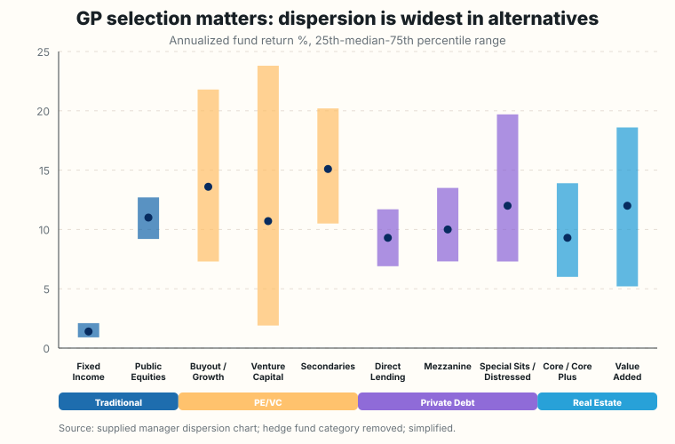
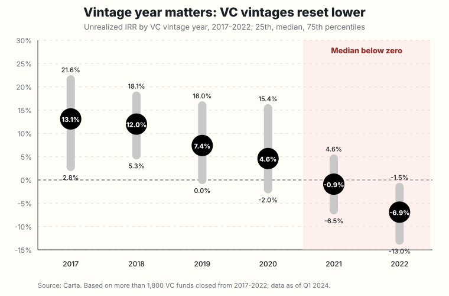
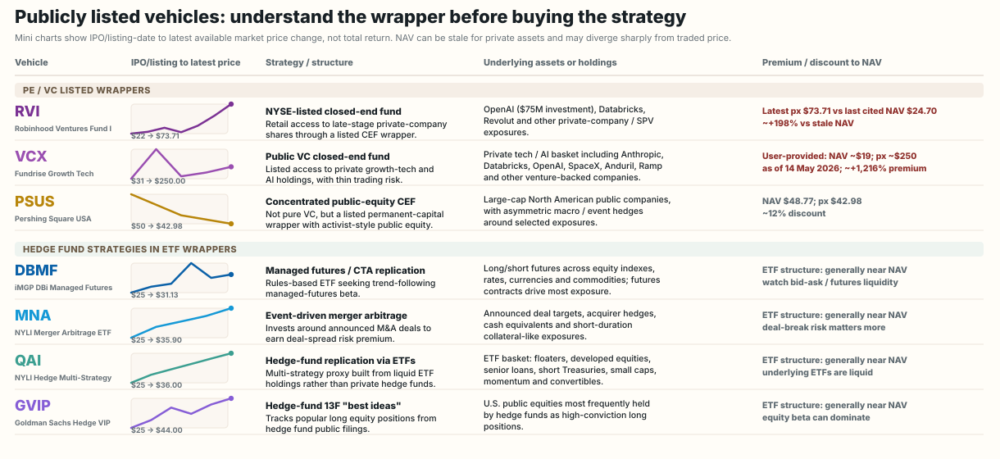

Stable Cashflows
Invest regularly in equities to maximize long-term accumulated return.

Introduction to Wealth Management

Interactive Analysis
Strategy Choice
Stable Cashflows
Invest regularly in equities to maximize long-term accumulated return.
Uncertain Cashflows
Diversify the portfolio to improve the return earned for each unit of risk.

Major Asset Classes


Major Asset Classes
Designed to track an index with transparent rules, broad diversification, and low cost. Useful as the portfolio core.
Use portfolio manager discretion or systematic signals to seek excess return, risk control, income, or targeted themes.
Major Asset Classes


Hedge funds can diversify equity risk, but product selection matters more than the label.
Major Asset Classes
GP selection: fund-level performance dispersion is much wider in alternatives than in traditional public markets.

Vintage year: VC entry timing can dominate outcomes, with 2021-2022 vintages showing median IRR below zero.

Alternative Equity Access
Feeder structures lower operational frictions for individuals, but investor eligibility, geography, liquidity and fund availability remain platform-specific.
| Platform | Min. Investment | Primary Asset Class | Investor Requirement | Geographic Coverage | Example Fund / Strategy |
|---|---|---|---|---|---|
| ~$50,000 / EUR50k | PE, VC, Infrastructure | Professional / Accredited | Europe, Asia, UAE | KKR, Carlyle, EQT | |
| $25k - $125k | PE, Credit, Hedge Funds | Accredited / Qualified Purchaser | Global (US-centric) | Blackstone, Apollo | |
| ~S$10,000 | PE, VC, Private Credit | Accredited (Singapore/HK) | Singapore, Hong Kong | KKR, Carlyle, Partners Group | |
| $10,000 | VC & Private Equity | Accredited Investor | USA | Wealthfront VC/PE Fund (fund-of-funds) | |
| $2,500 - $25,000 | Private Credit, PE | Retail & Accredited | USA | Fidelity Private Credit Fund (FCRED) | |
| $2,500 - $100k+ | PE, VC, Managed Futures | Accredited (mostly) | USA | Hamilton Lane, StepStone via feeder / interval structures |
Minimums and availability vary by fund, jurisdiction and eligibility. Table is illustrative, not an endorsement or complete product list.
Public Alternative Funds
